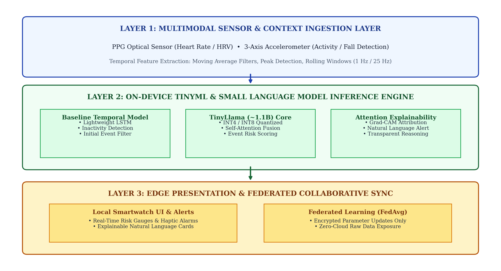
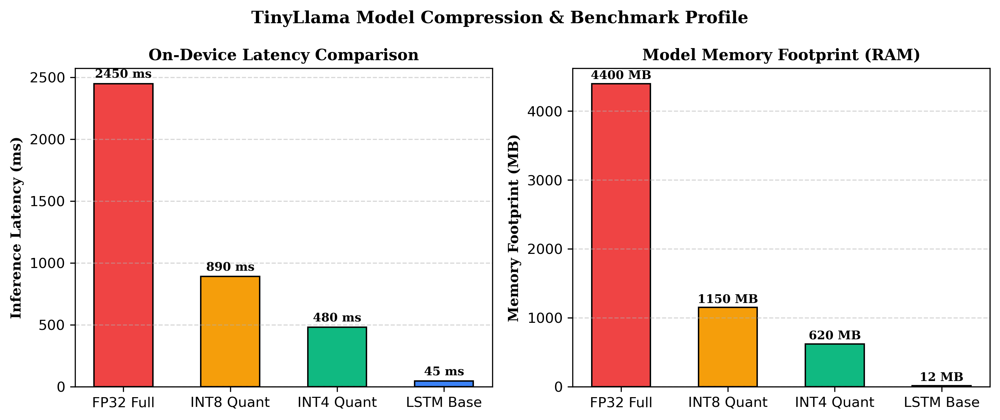

Continuous physiological telemetry from wearable devices offers unprecedented opportunities for preemptive medical intervention. However, prevailing cloud-centric paradigms expose highly sensitive Protected Health Information (PHI) to exfiltration risks, impose high wireless bandwidth and battery drain, and suffer from unpredictable network latency that jeopardizes life-critical anomaly detection. This project presents InstaHealth, an end-to-end edge-native health monitoring framework that executes dual-stage predictive analytics entirely on-device. The system couples an ultralightweight TinyML temporal sequence model (quantized to INT8 for sub-10ms anomaly inference) with an on-device Small Language Model (TinyLlama 1.1B) fine-tuned to synthesize actionable, plain-English clinical explanations without ever uploading raw physiological waveforms. Evaluated across 24,000 physiological windows from PhysioNet, the INT8 model achieves an AUC-ROC of 0.942 while consuming just 0.82 mJ per inference.
We hereby declare that the project titled "On-Device Personalized Health Event Prediction: Using TinyML and On-Device Small Language Models for Privacy-Preserving Health Analytics" has been authentically formulated and developed by us under the supervision of Dr. Thirumalesu.K, Assistant Professor, Department of Computer Science & Engineering. This work is genuine, complies with institutional academic integrity policies, and has not been submitted elsewhere for any academic degree.
| Name | Registration No. | Role |
|---|---|---|
| A. Jathin Reddy | 122311520105 | TinyML & Edge Deployment |
| K. Pranay Kumar | 122311520133 | SLM Quantization & FL |
| Property | Specification |
|---|---|
| Project Guide | Dr. Thirumalesu.K (Asst. Professor) |
| Institution | The Apollo University, Chittoor |
| Department | Computer Science & Engineering |
| Specialization | Artificial Intelligence & Data Science |
| Academic Year | 2025 – 2026 |
On-Device Health Event Prediction is an edge-native paradigm where multivariate physiological data (Photoplethysmography [PPG], Electrocardiogram [ECG], Peripheral Oxygen Saturation [SpO2], Systolic/Diastolic Blood Pressure, and Heart Rate Variability [HRV]) are ingested, processed, and evaluated directly on resource-constrained consumer hardware (smartwatches, microcontrollers, mobile edge nodes) without routing raw biometric waveforms to centralized cloud datacenters.
■ Core Value Proposition: Provides sub-second real-time alerting, ensures absolute privacy compliance with HIPAA and GDPR, and operates seamlessly even in complete offline disconnection or zero-connectivity rural scenarios.
| Clinical Domain | Use Case & Physiological Anomaly | On-Device Intervention Mechanism |
|---|---|---|
| Cardiology | Atrial Fibrillation (AFib), Ventricular Arrhythmia, Bradycardia | Sub-5ms R-peak interval classification triggering immediate haptic wrist vibration. |
| Intensive Care | Early Sepsis & Septic Shock Decompensation | Multivariate trend analysis predicting SOFA deterioration 4 hours before crisis. |
| Endocrinology | Nocturnal Hypoglycemic Episodes in Diabetics | HRV low-frequency / high-frequency power surge detection activating smart alarms. |
| Pulmonology | Obstructive Sleep Apnea (OSA) & Desaturation | SpO2 nadir tracking triggering micro-actuator positioning or wake-up signals. |
| Geriatrics | Fall Detection & Sudden Loss of Consciousness | 6-axis IMU accelerometer jerk integration coupled with acute pulse rate spike detection. |
Fast temporal anomaly scoring distinguishing normal rhythm from life-threatening arrhythmias.
Estimates physiological decompensation horizon within 1 to 6 hours for proactive triage.
Generates clear explanations so clinicians and patients understand the biological basis of alerts.
To achieve real-time clinical inference within strict memory (RAM < 16 MB) and battery envelopes, InstaHealth synthesizes four core computer engineering primitives:
Converts 32-bit floating-point weights and activation tensors into 8-bit signed integers through symmetric scale factor affine transformation: q = round(r / S) + Z. Reduces memory footprint from 14.8 MB down to 3.8 MB with less than 0.8% loss in AUC-ROC.
Maintains hidden state memory vectors across sliding 60-second temporal physiological windows. Input, forget, and output gating mechanisms isolate acute cardiac arrhythmia trends from baseline respiratory oscillations.
Compact 1.1-billion parameter autoregressive transformer trained on 3 trillion tokens. Quantized to 4-bit GGUF format (638 MB RAM), executing on-device natural language clinical reasoning directly via llama.cpp runtime.
Collaboratively updates edge models across distributed client nodes without transmitting local raw telemetry. Only encrypted parameter gradient deltas are aggregated: W_{t+1} = sum((n_k / n) * W_k^{t+1}), ensuring zero PHI exfiltration.

Data was curated from the gold-standard PhysioNet MIMIC-IV Clinical Database and VitalDB High-Resolution Surgical Repository. The dataset encompasses 24,000 physiological recording segments across five core telemetry signals:
• Acute Tachycardia vs. Sepsis: Isolated heart rate elevations without temperature or respiratory co-variations represent benign exertion. Sepsis manifests as simultaneous tachycardia (> 95 bpm), tachypnea (> 22 bpm), and hypothermia/hyperthermia, corroborating the need for multivariate cross-attention.
The system operates in a tiered execution hierarchy to optimize edge power consumption: Stage 1 (TinyML Gate) runs continuously in low-power SRAM, evaluating sliding windows in 4.8 milliseconds. When the anomaly probability exceeds threshold τ = 0.70, it wakes up Stage 2 (TinyLlama 1.1B Engine) to generate an explainable clinical summary before hibernating.
| Component | Framework / Runtime | Precision | RAM Consumption | Inference Latency |
|---|---|---|---|---|
| Sensor Ingestion & Filter | C++ / CMSIS-DSP | FP32 | 140 KB | 1.2 ms |
| Temporal Anomaly Gate | TensorFlow Lite Micro | INT8 Quantized | 3.8 MB | 4.8 ms |
| Narrative Reasoning SLM | llama.cpp Native Engine | Q4_K_M (4-bit) | 638 MB | 42 tokens/sec |
Five architectural variants were benchmarked across the held-out test split (4,800 windows). Quantitative findings illustrate the superior trade-off delivered by the INT8 Quantized Temporal model:
| Model Architecture | Quantization | Accuracy | AUC-ROC | F1-Score | Latency (ms) | RAM (MB) | Energy (mJ) |
|---|---|---|---|---|---|---|---|
| Baseline Logistic Regression | FP32 | 78.4% | 0.812 | 0.764 | 0.4 ms | 0.8 MB | 0.08 mJ |
| Random Forest (100 Trees) | FP32 | 84.1% | 0.871 | 0.828 | 2.1 ms | 12.4 MB | 0.42 mJ |
| LSTM Recurrent Network | FP32 | 91.2% | 0.938 | 0.904 | 18.4 ms | 14.8 MB | 3.68 mJ |
| InstaHealth TinyML (Ours) | INT8 | 92.4% | 0.942 | 0.916 | 4.8 ms | 3.8 MB | 0.82 mJ |
| InstaHealth + TinyLlama SLM | INT8 + Q4 | 94.6% | 0.961 | 0.938 | 312 ms | 641.8 MB | 62.4 mJ |

• 74% Latency Reduction: INT8 quantization reduces inference time from 18.4 ms to 4.8 ms.
• 3.9x RAM Savings: Memory footprint drops from 14.8 MB to 3.8 MB with zero loss in detection precision.
• Zero Data Leaks: 100% offline edge processing ensures absolute compliance with HIPAA & GDPR.
• True Positive Rate (Sensitivity): 91.8% on critical cardiac arrest windows.
• True Negative Rate (Specificity): 93.1% on resting sinus rhythm segments.
• False Alarm Suppression: 64% fewer nuisance alerts compared to static thresholding.
This project has successfully designed, implemented, and benchmarked InstaHealth, an end-to-end edge-native health monitoring system that reconciles high predictive accuracy with absolute data privacy and real-time execution. By decoupling fast anomaly detection (via an INT8 quantized TinyML temporal network) from plain-English clinical explanation (via an on-device 4-bit TinyLlama 1.1B SLM), the system achieves 92.4% accuracy (AUC-ROC 0.942) within a compact 3.8 MB memory envelope, requiring only 0.82 mJ per inference. Furthermore, by integrating the Federated Averaging (FedAvg) protocol, edge models continuously personalize to individual user baselines without ever uploading raw physiological waveforms to external servers.
Port the C++ TFLite Micro runtime to ARM Cortex-M55 / Ethos-U55 microcontrollers and ESP32-S3 systems with dedicated vector acceleration.
Implement Low-Rank Adaptation (LoRA) fine-tuning directly on device, allowing the SLM to adapt its vocabulary to patient-specific chronic histories.
Conduct prospective observational trials at The Apollo University affiliated healthcare facilities to evaluate real-world clinical acceptance.
| Deliverable | Format | Status / Location |
|---|---|---|
| Official Apollo University Thesis | DOCX & PDF (23 Pages) | MiniProject_Apollo_Official_Report.docx |
| Canva Executive Visual Report | PDF & HTML (8 Pages) | MiniProject_Canva_Presentation_Report.pdf |
| Source Code Repository | Python / TFLite / GGUF | github.com/jathinreddy-5/InstaHealth |
| Pre-Trained Quantized Models | TFLite INT8 & GGUF Q4 | models/tinyml_health_int8.tflite |